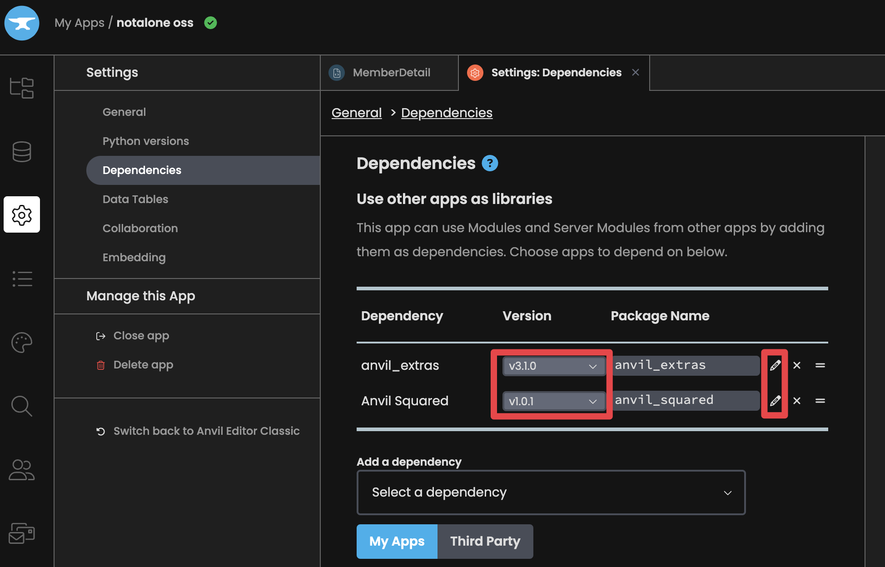
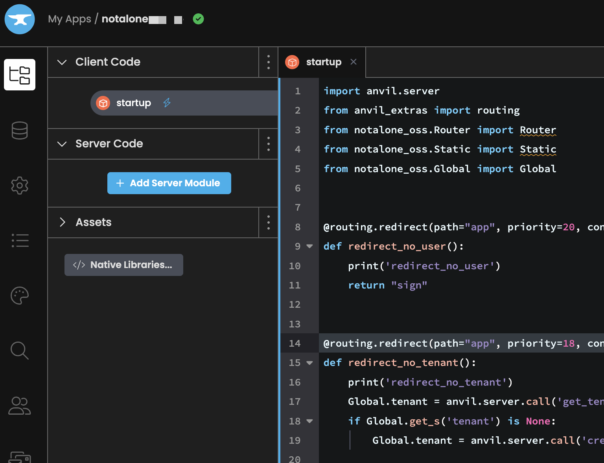
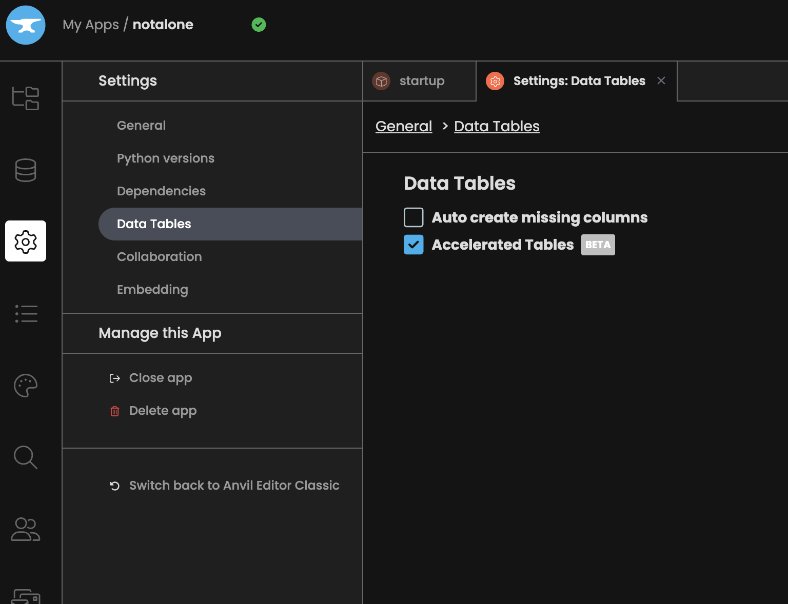
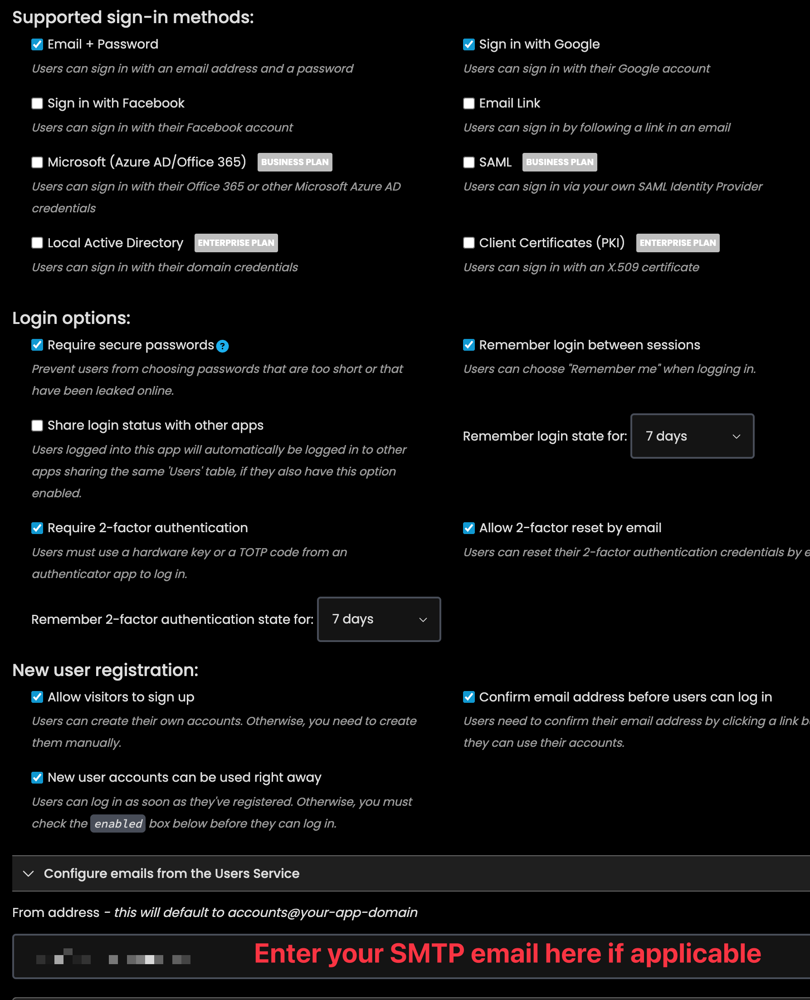

Getting Started Guide¶
This guide will help you set up your development environment for working with the Not Alone app. The app is built using Anvil's web framework and integrates with several external services.
Prerequisites¶
Before starting, ensure you have:
- A GitHub account
- A PayPal business account
- A DigitalOcean account (for Discourse hosting)
- A Mailjet account (for Discourse emails)
- Basic knowledge of Python and web development
1. Set up Mailjet and Discourse¶
See Discourse Setup
2. Set up PayPal¶
See PayPal Setup
3. Anvil Setup¶
- Visit anvil.works
- Sign up for a free account
- Choose the "Free" plan (sufficient for development)
4. Repository Setup¶
You have two options for setting up the repository, depending on your needs:
Option A: Fork the Repository (For Contributing Changes)¶
If you plan to contribute changes back to the main project:
- Fork the Not Alone repository:
- Visit https://github.com/yahiakala/notalone-app
- Click "Fork" button
- Go to your Anvil.works account and click "Clone from GitHub" under the "Create a new app" section
- Enter the URL to your forked repo, and authenticate with your GitHub account
- Click "Clone App"
Option B: Clone the Repository (For Using as Is)¶
If you just want to use the app without contributing changes:
- Clone the Not Alone repository directly:
- Go to your Anvil.works account
- Click "Clone from GitHub" under the "Create a new app" section
- Enter https://github.com/yahiakala/notalone-app
- Click "Clone App"
Setting up Dependencies¶
After either option above:
- Go to Settings > Dependencies
- Use the pencil icon to edit your dependencies, but do not change the versions
- Make sure the anvil_extras dependency is set to point to a third party dependency with dependency ID C6ZZPAPN4YYF5NVJ. See here for more info. Use the pencil icon. Do not change the tag.
- Make sure the anvil_squared dependency is set to point to a third party dependency with dependency ID KDKDM3MG6IQHC2FK. Use the pencil icon. Do not change the tag.

5. Creating a New App with Not Alone as a Dependency¶
Create your own app that uses Not Alone as a dependency. You have to do this because you want to eventually edit the SMTP settings and other information without editing the open source app.
Create a new Anvil app:
- Go to your Anvil.works dashboard
- Click "Create New App"
- Choose a blank template
Add Not Alone as a dependency:
- Go to Settings > Dependencies
- Click "Add Dependency"
- Choose the notalone app
Copy the startup.py file

Set your settings for accelerated tables, user settings, and smtp settings:



Additional Resources¶
- Anvil Documentation
- PayPal Developer Docs
- Discourse API Guide
- Project-specific docs in
/docsdirectory